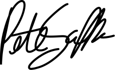

Hello Apple,
My name is Pete Schaffner. I specialize in interface and interaction design, animation and front-end engineering. I would love to use these skills in Cupertino to do my life’s best work.
I’m a technical and self-driven individual and I believe that to design something great you need to understand the materials and processes involved to build it. Thus, I’m just as at home with a pencil as I am with a terminal. I also believe that the tools we use are important and that they are in as much need of good design as the things they create.
I’ve compiled here some of my work and experiences for you to review, but unfortunately I am unable to share much of what I’m currently up to. Nonetheless, I hope this little site and its contents can somewhat speak to my abilities.
Sincerely,
